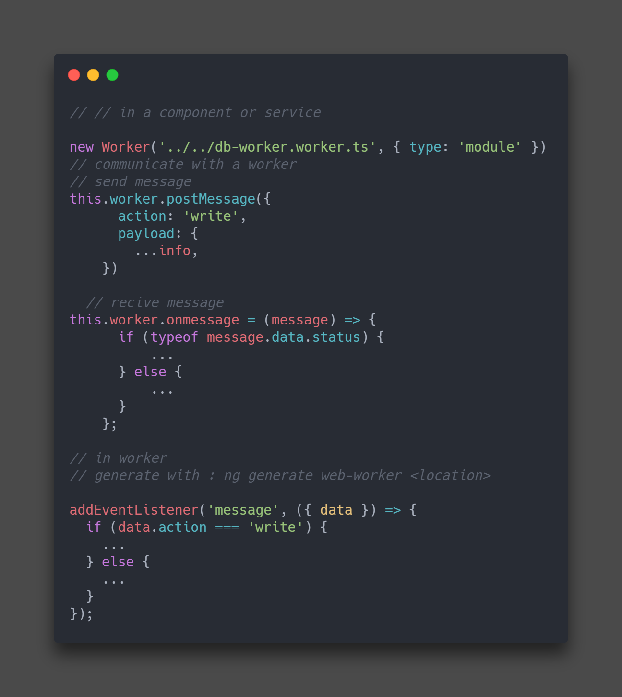

⚙️وب ورکر چیه ؟
در اگر بخوایم کامل تر حرف بزنیم وب ورکر یکی از 5 نوع ورکری هست که در جاوا اسکریپت وجود داره :
- Service workers
- Shared workers
- Web workers
- Inline Workers
- Dedicated Workers
و سوالی که پیش میاد اینه که خود ورکر چیه اصلا ؟!
ورکر ها این اجازه رو به ما میدن که خارج از thread اصلی برنامه بتونیم کارایی انجام بدیم. مثلا کاری که در تب بعدی انجام دادیم این بوده که تعداد زیادی داده رو توی دیتا بیس های مختلف ذخیره میکنیم ولی وقتی از thread اصلی استفاده میکنیم میبینیم که DOM بلاک میشه و اون اسپینر بالا حرکتش مختل میشه ولی وقتی شروع به انجام این عملیات توی وب ورکر میکنیم دیگه این مشکل رو نداریم .
این یک مثال خیلی خوبه که میتونه عملکرد ورکر ها رو به خوبی نشون بده .
استفاده از Web-Worker
برای استفاده از یک Web-Worker میتوان به کمک Angular CLI در آدرس مورد نظر یک ورکر بسازیم و به صورت زیر با آن ارتباط برقرار کنیم :
